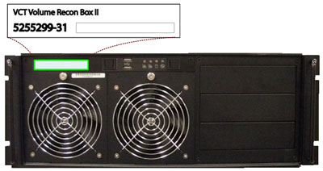
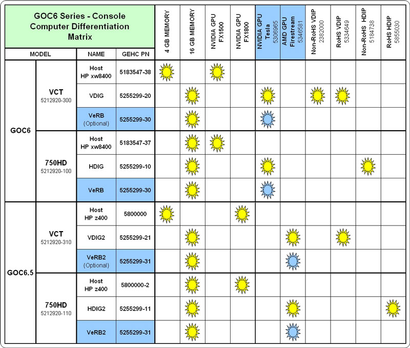
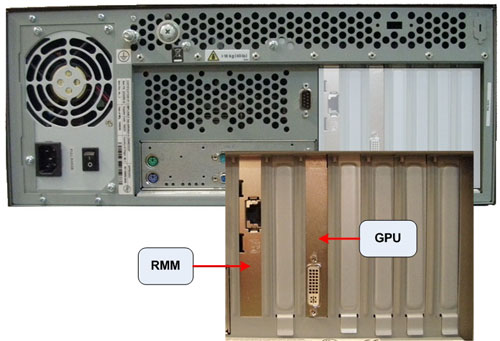
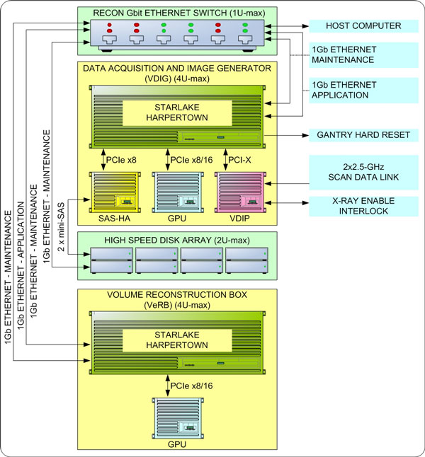
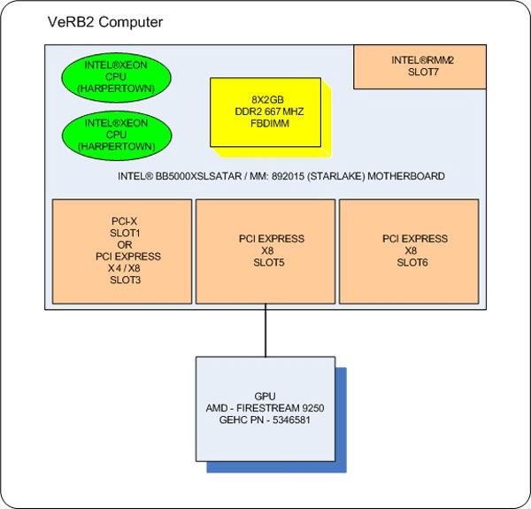
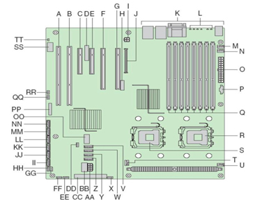
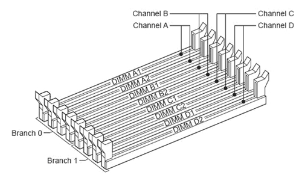

Operating Documentation
Direction 5193574-800, Rev# 22
LightSpeed 7.X Service Methods
Module Version 2.0, Version Date 8/16/10
Operating Documentation |
| Last Revised: | 28 May 2010 |
Illustration 1: VeRB2 Computer

The Volume Reconstruction Box Computer Version 2 (VeRB2) used in the Global Operator Console Series (GOC 6.5) is a custom designed computer based on the Intel x86 multi-core processor server platform and manufactured by a third party vendor for GE Healthcare.
| NOTE: | The VeRB Computer used in the GOC6 Series Operator Consoles
will have several configurations based on system and console utilization.
The primary difference with VeRB Computer configurations is based
on the type of GPU board installed inside the VeRB Computer. DIG and
VeRB Computers utilize NVidia GPU's. DIG2 and VeRB2 Computers utilize
AMD GPU's. Like type GPU's (NVidia or AMD) must be installed in both
the DIG and VeRB Computers in the same console. Mixing of GPU type
will result in image quality issues and is not permitted. Illustration 2: VeRB Configurations  |
The VeRB2 is utilized for performing Adaptive Statistical Iterative Reconstruction (ASiR) function. In addition the VeRB2 Computer enhances the RECON Engine's Image Generation Frame Rate performance.
The VeRB2 Computer communicates with the Host Computer through the Console Network Switch (CNS) and is remotely booted through this connection. Once operational the VeRB2 Computer performs reconstruction processes controlled by Host Software Subsystem.
Illustration 3: VeRB2 Computer (Rear)

Illustration 4: VeRB2 Interconnect Diagram

The following is a brief theory overview of the hardware and software associated with the VeRB2 Computer.
The VeRB2 Computer is a two (2) Quad-Core Intel® Xeon® processor (Harpertown) based computer configured by GE Healthcare utilizing the Intel Starlake (S5000XSL) server class board.
Basic Configuration:
1- Intel® Starlake (S5000XSL) server class motherboard
8 - 2 GB, DDR2 ECC 667MHz PC5300 DIMM Memory Modules (total of 16 GB)
1 - AMD® Firestream™ 9250 GPU Card
1 - 400 Watt PSU
Illustration 5: VeRB2 Computer Block Diagram

The motherboard contained in the VeRB2 Computer utilizes the following integrated hardware.
Dual LGA Socket J (771-pin LGA) Multi-core Intel® Xeon® Processor Motherboard with:
• 2 Intel® Quad-core Zeon® (Harpertown) 2.33 GHz Processors with 4 MB shared L2 Cache
• Front Speed Buss of 1333 MHz
• 8 Memory Slots (32 GB max.)
• Integrated
Video
2 x GBit NIC Ports
USB 2.0 Ports
SATA Hard Disk Controller (Not used)
• Remote Management Module (RMM)
http://support.intel.com
Complete details of the Intel® Starlake (S5000XSL) server class motherboard can be obtained from the at the Intel® support web site.
See the following illustrations for Motherboard Layout.
Illustration 6: Intel® Starlake Motherboard Layout

Table 1: Motherboard Components
| Item | Description | Item | Description | Item | Description | Item | Description |
|---|---|---|---|---|---|---|---|
| A | PCI-X 100 MHz Slot 1 | M | System Fan 6 Header | Y | System Fan 2 Header | KK | SATA 2 or SAS 0 |
| B | PCI-X 133/100 MHz Slot 2 | N | System Fan 5 Header | Z | System Fan 1 Header | LL | SATA 3 or SAS 1 |
| C | PCI-E x8 Slot 3 | O | Main Power Connector | AA | Processor Power Connector | MM | SATA 4 or SAS 2 |
| D | RMM NIC Connector | P | Aux. Power Signal Connector | BB | USB Header | NN | SATA 5 or SAS 3 |
| E | PCI-E x8 Slot 4 | Q | DIMM Sockets | CC | IDE Connector | OO | USB Port |
| F | PCI-E x16 Slot 5 (x8 electrically) | R | Processor 1 Socket | DD | Enclosure Management SATA SGPIO Header | PP | Front Control Panel Header |
| G | PCI-E x16 Slot 6 (x8 electrically) | S | Processor 2 Socket | EE | Local Control Panel Header | SATA SW RAID 5 Key Connector | |
| H | CMOS Battery | T | Processor 2 Fan Header | FF | Hot-swap Backplane B Header | RR | SAS SW RAID 5 Key Connector |
| I | P12V4 Connector | U | Processor 1 Fan Header | GG | Enclosure Management SAS SES 12C Header | SS | Serial B / Emergency Management Port |
| J | Connector for RM Module | V | System Fan 4 Header | HH | Hot-swap Backplane A Header | TT | Chassis Intrusion Header |
| K | Back Panel I/O Ports | W | System Fan 3 Header | II | SATA 0 | ||
| L | Diagnostics and Identify LEDs | X | IPMB Connector | JJ | SATA 1 |
Illustration 7: Intel® Starlake ATX I/O Layout

Table 2: Motherboard ATX I/O Layout
| Item | Description | Item | Description |
|---|---|---|---|
| A | PS/2 Mouse | E | NIC Port 1 ( 1Gbit) |
| B | PS/2 Keyboard | F | USB Port 2 (top), 3 (bottom) |
| C | Serial Port | G | NIC Port 2 ( 1Gbit) |
| D | Video | H | USB Port 0 (top), 1 (bottom) |
Illustration 8: Intel® Starlake Motherboard Block Diagram

The VeRB2 Computer is equipped to handle up to eight (8) fully buffered DIMM Memory Modules.
The base memory configuration contains eight (8) two (2) GB, DDR2 ECC 667MHz PC5300 DIMM Memory Modules (total of 16 GB).
See the following illustration for Memory Slot Assignment.
Illustration 9: Memory Slot Assignment

An integrated Dual Gbit Ethernet controller on the VeRB2 motherboard handles network interface support for the VeRB2 computer. Each network interface controller (NIC) drives two LEDs located on each network interface connector. The Link/Activity LED at the left of the connector indicates connection when on, and transmit / receive activity when blinking. The Speed LED at the right of the connector indicates data rate. See the following illustration for NIC LED status.
Illustration 10: NIC Status LEDs

Table 3: Motherboard NIC LED Status
| LED Color | LED State | NIC State |
|---|---|---|
| Off | 10 Mbps | |
| Green / Amber (Right) | Green | 100 Mbps |
| Amber | 1000 Mps | |
| Green (Left) | On | Active Connection |
| Blinking | Transmit / Receive activity |
The AMG Firestream Graphics Processor card is the main image reconstruction processor in the GRE subsystem and supplies the same functionality as the RAC boards in previous generation of the GOC consoles. The Firestream 9250 card utilizes the RV770 GPU which is specifically designed to handle highly parallel computation, needed for image generation and reconstruction.
Firestream 9250 GPU specifications:
Second generation AMD GPU with DP-FP in hardware
1GB on-board GDDR3 memory
Fits in one full-length, single slot with one open PCIe 2.0, x16 slot
The VeRB2 Computer is powered by a 400 Watts PSU. Rated voltage range 95-132 VAC and line frequency 50-60 (+/- 3) Hz, auto switching and power factor correction.
See the following illustration for Connection Labeling of the VeRB2 Computer in the GOC 6.5 console.
Illustration 11: VeRB2 Computer Connections

The VeRB2 OS and Application software is located on a dedicated Network File System (NFS) on the Host Computer hard drive. Upon successful POST of the VeRB2 Computer hardware, the VeRB2 remote boots from this dedicated Network File System (NFS) and loads the operation software to VeRB2’s memory. The VeRB2 Computer runs on a specifically configured GE Healthcare Linux OS and Application software, found on the Host Computer Operating Disk (/usr/g/verb).
The VeRB2 Computer is equipped with a ROM-based initialization firmware that starts the server hardware. The BIOS of the computer is a collection of machine language programs stored as firmware in ROM. The BIOS ROM includes such functions as POST, PCI device initialization, Plug 'n Play support, power management activities, and the Computer Setup Utility.